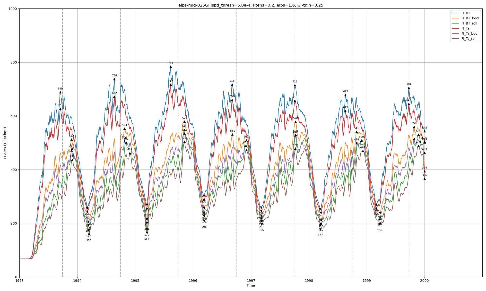

FIA_ry93_1.0e-3
FIA_ry93_5.0e-4
FIA_Cstar-max-025GI_5.0e-4

FIA_Pstar-max-025GI_5.0e-4
FIA_Pstar-min-025GI_5.0e-4

FIA_elps-def_1.0e-3

FIA_elps-max-025GI_5.0e-4

FIA_elps-max_1.0e-3

FIA_elps-mid-025GI_5.0e-4

FIA_elps-min-025GI_5.0e-4

FIA_gi-max_1.0e-3

FIA_gi-min_1.0e-3

FIA_ktens-max-025GI_5.0e-4
FIA_ktens-min-025GI_5.0e-4

FIA_ktens-nil-025GI_5.0e-4